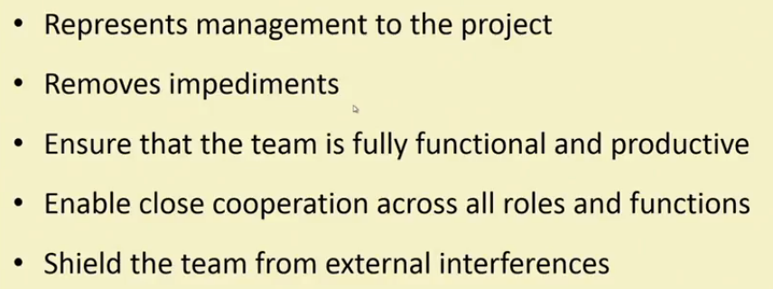

Scrum
Characteristics
→ Self organizing teams
→ Product progresses in a series of month-long sprints
→ Requirements are captured as items in a list of product backlog.
→ One of the agile processes
Framework
→ Role : Product owner, Scrum Master, Team
→ Ceremonies : Sprint planning, Sprint review, Sprint Retrospective and Daily Scrum Meeting.
→ Artifacts : Product backlog, Sprint Backlog, and Burndown Chart.
Key roles
→ Product owner
→ Develpment Team
→ Scrum Master (aka Project Manager)
